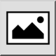

Это автоматический перевод.
Панель инструментов / Иконка:

Меню: Начертить > Вставить растровое изображение
Горячая клавиша: I, M
Команды: insertbitmap | bitmap | im
Inserts a raster image (bitmap) into the drawing.
Note that the drawing file which is created when saving the drawing,
contains only references to inserted images. It is recommended to keep the
image file and the drawing file in the same folder, so QCAD can find the image
again when the drawing file is loaded later.
Transparent backgrounds are supported for PNG images.
Note that large bitmaps can cause the drawing display to become very
slow.
Usually you will want images to be in the background of other entities.
Please refer to the
'Modify' - 'Send to
back' tool to learn how to do this.